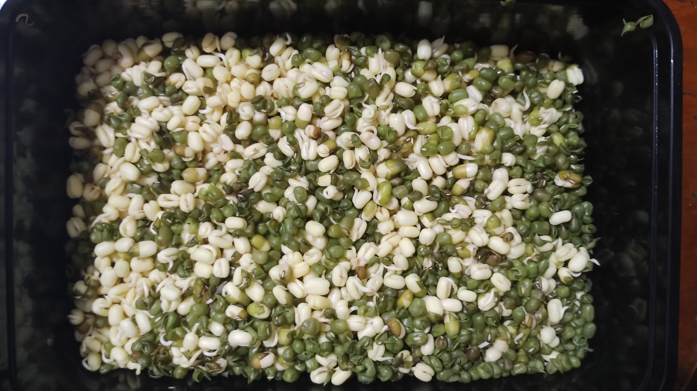
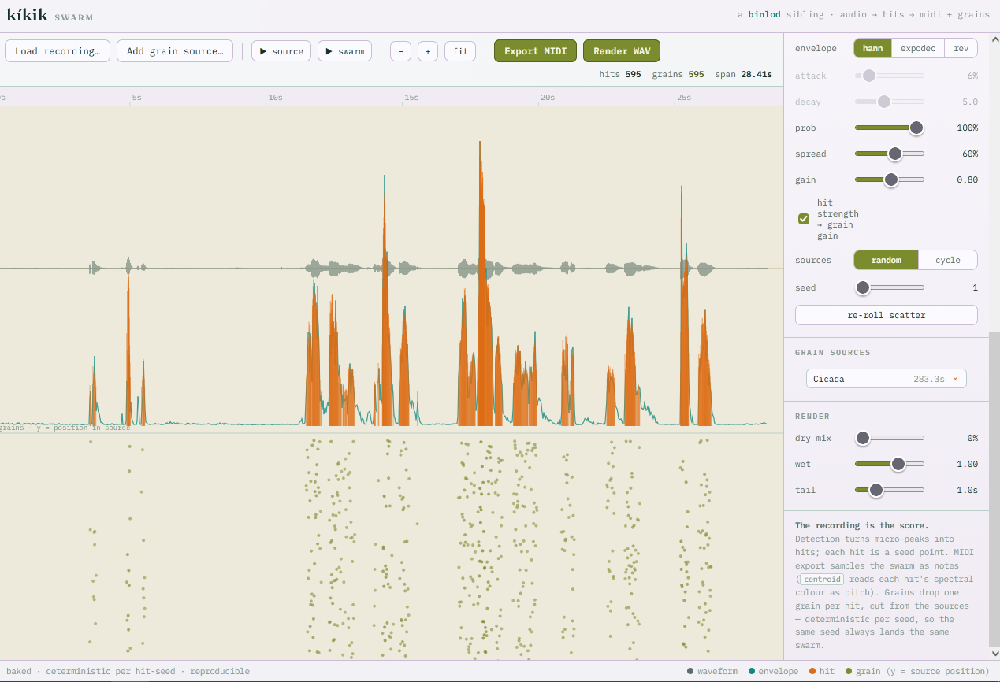
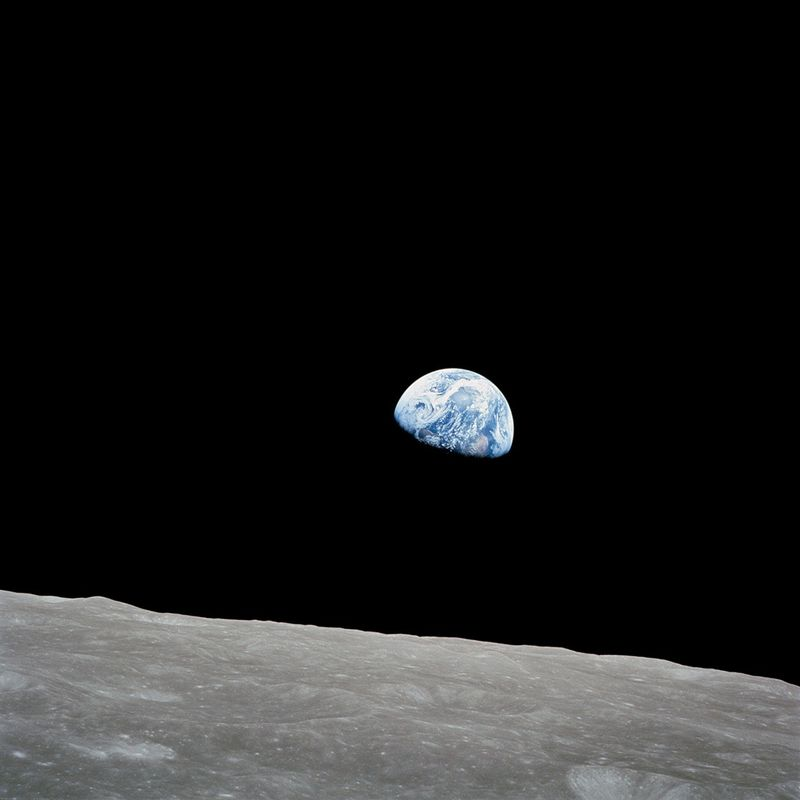
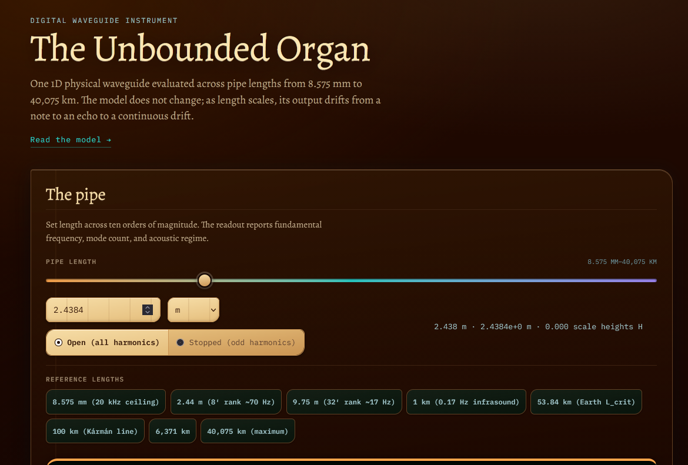
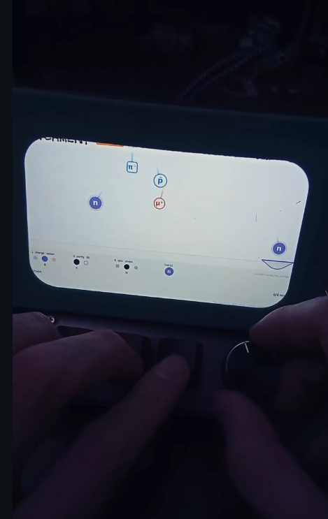
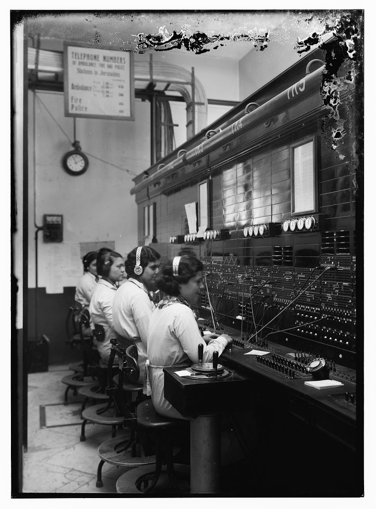

Non-human organisms

Questions
How can humans co-create with non-human organisms in modern media? What does it mean when these organisms come into contact with culture and technology?
Related works
-
 PhysaA browser instrument for comparing circuit models of a proposed slime-mould memristor.
PhysaA browser instrument for comparing circuit models of a proposed slime-mould memristor.
-

kíkikCicada calls set the timing of grains of a spoken poem in Hiligaynon, Japanese, and English. -
 A Comma PoemMung bean sprouts mark the comma positions of a José García Villa poem on black gulaman.
A Comma PoemMung bean sprouts mark the comma positions of a José García Villa poem on black gulaman.
Related research
-
Biomemristor as Instrument
Accepted as a conference presentation by ESNMA 2026
A practice-led study that turns a dispute over whether a slime mould behaves as a memristor into a comparison that can be played and heard.
-
Placing the Nonhuman
Submitted abstract · accepted by Noema
An upcoming essay on green colonialism, ecoprimitivism, and how technics already shapes ecological relations.
Non-human scales

Questions
How do we sense and situate ourselves in the world and universe? What changes when we try to sense events at subatomic scales?
Related works
-

The Unbounded OrganA simulated pipe organ that reaches Earth’s circumference. The next version extends from a 4 mm pipe, smaller than an eardrum, to the mean Earth–Moon distance. -
 CytophonesBrowser instruments including Halocline and Seismocyte, which use live marine and earthquake data.
CytophonesBrowser instruments including Halocline and Seismocyte, which use live marine and earthquake data.
-

CatchmentA game about detecting subatomic particles by adjusting a detector’s charge, parity, and spin settings.
Related research
-
Composition Without Audition
How an executable model can specify a composition beyond the range of hearing.
-
The Radial Poetics of Planets and Stars
How measurements and their infrastructures shape models of planetary interiors.
Machine agencies


Questions
How can we co-create with machines if we consider them as non-human agencies rather than as mere tools or simulacra of humans? How do technological structures and code mediate what machines can sense?
Related works
-
 a landline imagining a line probe during a stormAn algorithmic sound piece that imagines how a telecommunications system dreams without humans.
a landline imagining a line probe during a stormAn algorithmic sound piece that imagines how a telecommunications system dreams without humans.
-
 TabotaA post-MIDI language for musical events, microtonality, and nested meters, with ways to place and move visual and textual elements.
TabotaA post-MIDI language for musical events, microtonality, and nested meters, with ways to place and move visual and textual elements.
-
 goopCodecsA suite that creates new file formats for glitch art, each designed around what happens when its image data is edited.
goopCodecsA suite that creates new file formats for glitch art, each designed around what happens when its image data is edited.
Related research
-
From Interiority to Interaction
How robots and other artificial interaction partners take on social roles through interaction, with cases from Japanese cultures.
-
The Negative of a Word: Loab and the Poetics of Embedding Space
Submitted to DH2027
Starting from Steph Swanson’s Loab, I tested what two CLIP text encoders retrieve when word vectors are reversed.
Distinct nearest matches for 2,000 sampled words per run - Reversed
- 2–11
- Mean removed, then reversed
- 1,493–1,725
Making and listening
- Build
- Create
- Listen
- Revise
Document what is heard alongside measurements and logs, then revise the pieces and instruments. I’d like to discuss how aural training could guide those listening sessions.
For the machine branch, one vocal study could ask the same model to vary a phrase supplied as text-form MIDI events and as a Tabota score, then render the results with the same instrument to compare phrasing and pitch.